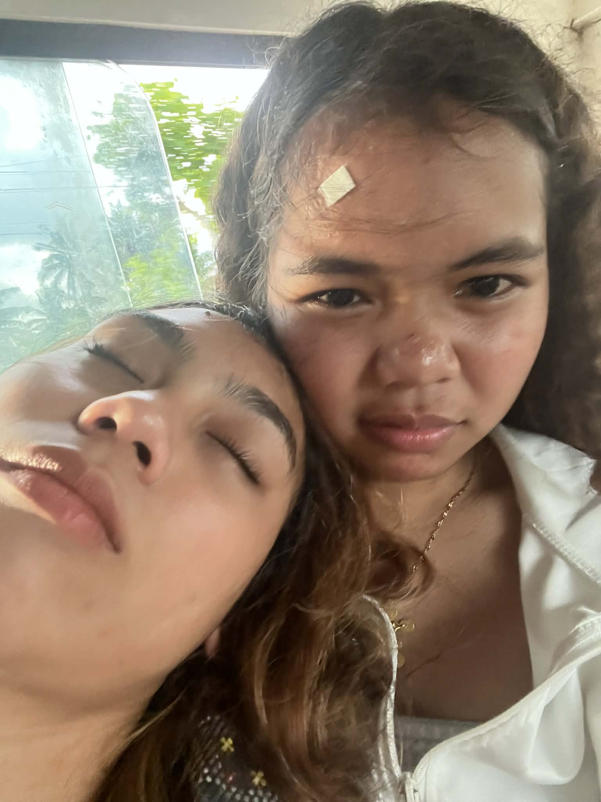
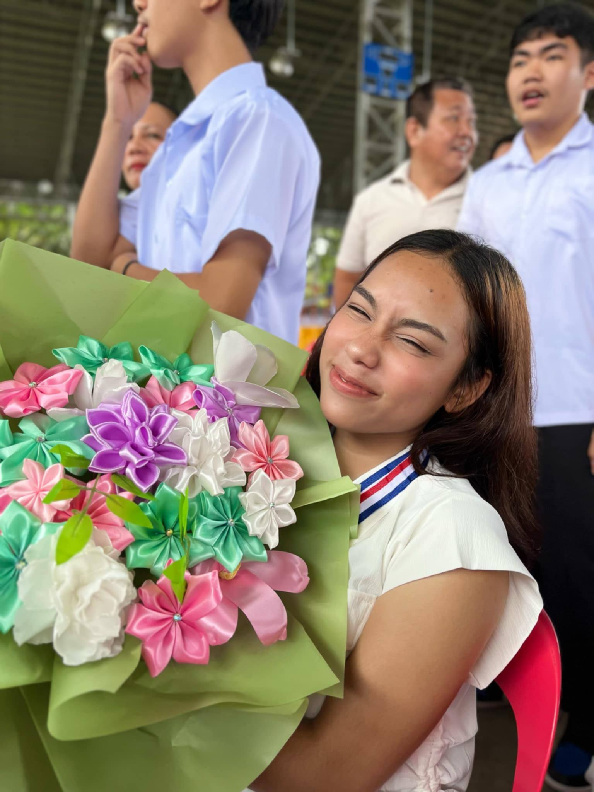

FROM THE BOTTOM OF MY HYPOTHALAMUS
Dear Noralie, ♡
Hi, Mena!! Merry Christmas, Happyyy 2027 HAHAHAHA.
i don't really know where to begin, because how do you put years of knowing someone into a few paragraphs? how do you explain what a person meant to you when, for the longest time, having them around was just a normal part of life?
you were such a special part of mine, hemena. from those little moments in grade 7 to everything we shared in the years that followed, you became someone i never thought i'd have to learn how to live without. you weren't just someone i talked to every day. you were someone who became part of my memories, my routines, my stories, and so many versions of myself growing up. you were there for so many chapters of my life, and no matter how much has changed since then, i could never pretend that those chapters meant nothing to me.
and honestly, one of the things i still struggle to understand is how i could do you wrong the way i did. how could i hurt someone who meant that much to me? someone i shared so much of my life with? i wish i had a good explanation, but i don't want to make excuses just to make myself feel better. i know what i did. ik the ways i could've handled things differently, the conversations i should've had with you instead of other people, and the things i should've been brave enough to say directly to you. i know that caring about someone doesn't mean much if your actions end up making them feel otherwise.
you didn't deserve that from me. and i'm sorry.
i know that saying sorry doesn't undo anything, and making this website doesn't magically fix what happened between us. i can't expect a gift to make up for the things i've done, and i would never want you to feel like you owe me forgiveness just because i made something for you. i just wanted to create something that could hold the words i've never really known how to put together.
because despite everything, the way i care about you didn't just disappear when we stopped talking like we used to. i still care about how you're doing, about the things that make you happy, about the dreams you're working toward, and about the person you're becoming. i may not get to know all those things firsthand anymore, and i understand that. i know i don't get the same place in your life that i used to have, and i know that some things are different now because of my own choices. but i will never look back at what we had and wish that i had never known you.
so, with a new year beginning, i guess there's something i want you to know. this isn't me asking for the old us back, and it isn't me pretending that nothing happened. it's me acknowledging that you mattered, that you still matter to me as a person, and that i'm sorry i didn't always treat our friendship with the care it deserved.
i hope this year brings you so many reasons to be happy. i hope you get the things you've been quietly wishing for. i hope you keep growing into yourself, keep finding things that make your eyes light up, and keep becoming someone you're proud of. even if i'm no longer the person you tell everything to, i can still genuinely wish the best for you. i can still be proud of you from a distance. and i can still be thankful that, for a significant part of our lives, we got to grow up alongside each other.
thank you for being part of my growing up. thank you for the memories, the laughter, the little things that probably seemed ordinary back then but mean so much more when i look back at them now. and i'm sorry for the ways i failed to take care of something that was once so important to me.
happy new year, hemena.


Yun lang, mahal kita. Go explore na. ♡
WHENEVER YOU FEEL LIKE IT
A few things for you to explore.
pili lang te tusloka dayon.
FOR WHATEVER KIND OF DAY IT IS
Open When…
Choose an envelope to open.
A COLLECTION OF LITTLE THINGS
The Hemena Archive
Some things deserve a place to stay.
IT'S ALWAYS THE LITTLE THINGS
Things That Remind Me of You
Click an object to discover why it's here.
Please press 'pause this banger' before clicking anything here
Soundtrack of an Era ♫
Some songs end up meaning more than they should.
♡ Tap a song to open it on YouTube Music.